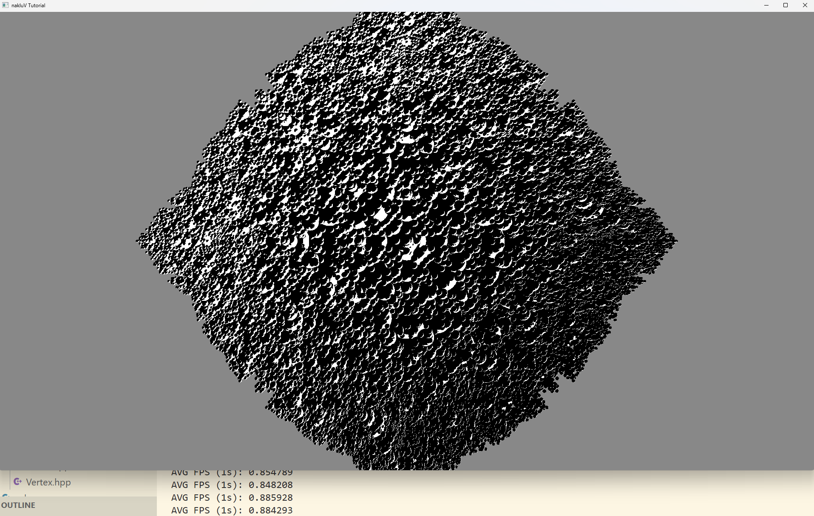
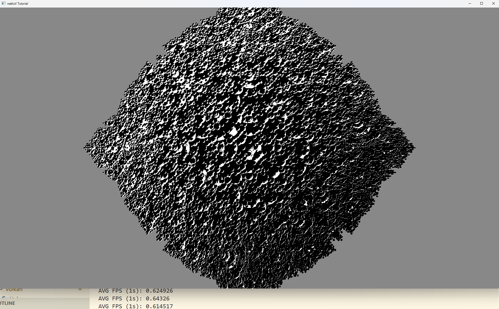
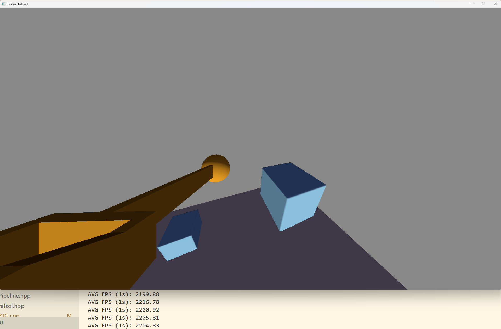
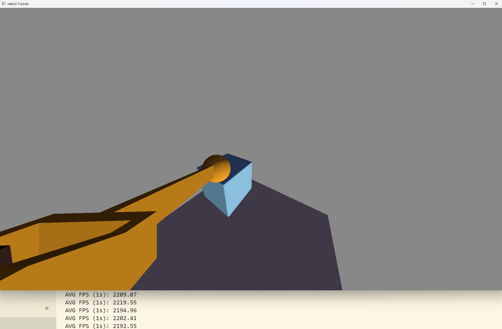

Summarize, in about one paragraph, your approach to the scene graph assignment. How did you structure your code? What's cool about it? Are there parts you weren't able to complete?
Describe your animation and include a screen recording showing it running in real-time:
Describe how you created your animation.
Provide a short overview of how to use your viewer.
Document the command-line arguments that can be used to control your viewer. Include both the command-line arguments required by the assignment statement and any additional arguments you decided to add.
--scene scene.s72 -- required -- load scene from scene.s72--camera camera_name -- optional -- start with the specified camera. If the user doesn't use this parameter or the camera doesn't exist, the program will use the "user" camera.--debug-camera -- optional -- start with the debug camera active. If open this, user can only use the debug camera and would observe the bounding box lines--physical-device device_name -- optional -- specify the physical device to use--drawing-size width height -- optional -- specify the drawing size--headless -- optional -- run without opening a window (for benchmarking)Document the keyboard and mouse controls used to control your viewer when run interactively. Note that the controls below are placeholders not requirements.
I started working on this assignment during the winter break. While I based my foundation on the tutorial's codebase, I made several architectural adjustments to better suit my needs. Before diving into the specific implementation details, I would like to briefly introduce the project structure
core/ This directory contains the implementation of the Application and Pipeline for each assignment.shaders As the name suggests, this folder houses all the shader source code.utils/general/ Contains general purpose utility classes, such as sejp for JSON parsing.utils/loader/ This includes the custom S72 and texture file loaders I implemented.utils/manager/ This is where the primary architectural changes happened. I encapsulated various resource operations required by the Application into this module to improve code organization.utils/vulkan/ Contains utility classes for interfacing with the low-level Vulkan API, such as the Helpers class responsible for memory allocation.
I started by defining the S72 data structures according to the documentation. Once the data is parsed, it is stored in a tree structure. Also, there is a std::vector for each resource type (e.g., meshes, materials, textures) that stores all the resources of that type.
For accessing the data, I provided two methods: users can either look up a resource by name using a std::unordered_map to get its index, or simply loop through the entire std::vector to access all resources at once.
The implementation of the S72 loader is encapsulated in the utils/loader/S72Loader.hpp file.
There is three steps to display a scene.
Initialization (Application.create):Based on the loaded results, this function initializes several Manager classes to prepare resources for the render loop. For example, the SceneManager reads binary vertex data from .b72 files and allocates device memory.Update Data (Application.update):This function is responsible for updating dynamic data every frame, such as calculating the new Model matrix by traversing the scene graph.Rendering (Application.render):This stage handles the resource binding and issues draw calls.
The CameraManager.hpp handles three distinct types of cameras, each serving a specific purpose.
Scene Camera:Initialized using data from the scene graph. It updates its parameters every frame by retrieving the latest Model matrix from the scene graph nodes. The specific logic is implemented in CameraManager.update_scene_cameraUser Camera:An instance is automatically created during the CameraManager initialization and is always placed at the beginning of the std::vector. It utilizes a standard free-look control scheme (similar to FPS games), updating its state in real-time based on InputEvent data. This is handled in CameraManager.update_user_camera.Debug Camera:The debug camera shares the same control logic as the User Camera. It is stored as a separate reference rather than in the std::vector. This structural separation allows for easy access to the View and Projection matrices of the currently active main camera (for visualization or culling debugging)
The frustum culling is executed within the Application.update
Camera Update:First, I call camera_manager.update to refresh the camera's state and retrieve the current viewing frustum via camera_manager.get_frustumBounding Box Transformation:To calculate the World Space AABB, I transform the mesh's local AABB using its current Model Matrix. Note that the local AABB is already recorded by the SceneManager from the vertex loading stage.Visibility Test:Finally, I perform an intersection test using frustum.is_box_visible. Only meshes that pass this check are added to the instance vector.Mathematically, a plane can be defined by the equation $n \cdot p + d = 0$, where $n$ is the normal vector, $p$ is any point on the plane, and $d$ represents the offset distance from the origin.
To derive the frustum planes in World Space, consider a World Space point $p$ located on the left boundary of the frustum. In NDC (after applying the Projection-View matrix, $PV$), this point satisfies the condition $(PV \times p).x = -1$.
By expanding the matrix multiplication and rearranging the terms, we obtain:
$$ (m_{00} + m_{30}) p_x + (m_{01} + m_{31}) p_y + (m_{02} + m_{32}) p_z + (m_{03} + m_{33}) = 0 $$
where $m_{ij}$ denotes the corresponding element of the $PV$ matrix. This equation perfectly matches the standard plane equation form in World Space. The derivations for the remaining planes follow similar logic. So we can derive all six frustum planes using the $PV$ matrix. The complete implementation is located in CameraManager.get_frustum.
To obtain the AABB in World Space, we transform the Model Space AABB using the Model Matrix. Instead of transforming all eight corner points, I utilized a more efficient approach based on the independence of components. Since the X, Y, and Z components of the Model Space AABB affect the resulting World Space dimensions independently, we can calculate the minimum and maximum contributions of each axis separately. By accumulating these contributions (as shown in the code below), we derive the final World Space bounds.
// Loop through x, y, z axes
for (int i = 0; i < 3; ++i) {
// Calculate the contributions of the min and max extents
glm::vec3 a = glm::vec3(MODEL[i]) * bmin[i];
glm::vec3 b = glm::vec3(MODEL[i]) * bmax[i];
// Accumulate the smallest and largest contributions
world_min += glm::min(a, b);
world_max += glm::max(a, b);
}
To determine if an AABB is outside the frustum, we calculate two values relative to the plane's normal vector $n$:
If the condition $center_d + r < 0$ is met, it indicates that the nearest point of the AABB is still behind the plane. Therefore, the AABB is completely outside the frustum and can be culled. The implementation is found in Frustum.is_box_visible.
When the S72 file is parsed, I store all keyframe information in the Driver structure.
For the actual animation logic, I use SceneTree::update_animation, which is called by Application.update every frame. This function takes the current time as input, loops through all Driver nodes to calculate the correct interpolation, and finally updates the scene graph with the new values.
Describe for your CPU- and GPU-bottlenecked scenes what your approach was to moving the critical part of the workload to the CPU or GPU, respectively. Include a screenshot of the scenes as well as s72 and b72 files as needed.
Describe how you generated the scenes.
Describe how you tested the scenes -- including any relevant hardware information about the computer(s) you tested on.
Provide evidence that in each scene the CPU- or GPU-part of the workload is, indeed, a bottleneck. Use charts and graphs as appropriate to make your argument.
To optimize rendering performance, I implemented a Bindless-style texture management system. The workflow is as follows
Texture Loading:Upon initialization, the TextureManager uses Texture2DLoader to load all texture data and allocate device memory. To ensure efficient access, I enforced a strict memory layout for each material. Texture slots are assigned fixed indices, which is defined in TextureSlotDescriptor Setup:Since texture resources are static, I moved the descriptor update logic from the render loop to the Pipeline initialization phase. Instead of binding textures per material, I bind all loaded textures to a single, large descriptor set.Descriptor Binding:During the Application.render, I avoid switching descriptor sets for every mesh. Instead, I bind the descriptor set once and utilize Push Constants to pass the specific material index to the shader. The shader then uses this index to sample from the correct texture in the bindless array.This approach will reduces the CPU overhead caused by frequent descriptor binding and state changes. However, since it's hard to change my codebase to a non-bindless texture management, I cannot provide a direct comparison.
To further optimize performance, I implemented a Dirty Flag mechanism within the scene graph to cache TRS (Translation-Rotation-Scale) matrices and avoid redundant calculations. When a node is modified by the animation system, it—and its descendants—are marked as "dirty" (see the SceneTree.update_animation). During the subsequent traversal, the system checks this flag; if the node is dirty, it calcute the TRS martix and refresh the cache; otherwise, it retrieves the cached TRS matrix directly(see the SceneTree.traverse).
I first test the difference between cache and no cache implementations using sphereflake scene, which contain a big scene graph. On the other hand, I also test this optimization on a simpler scene to observe the impact.




The results show that the optimized version with dirty flags has a higher frame rate compared to the original version without caching. However, the actual performance gain may vary depending on the complexity and structure of the scene graph. In simple scenes with fewer nodes, the overhead of managing dirty flags might outweigh the benefits.
This is the end of the structured report. Feel free to add feedback about A1 to this section.